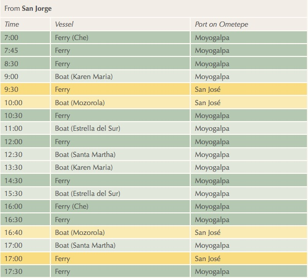
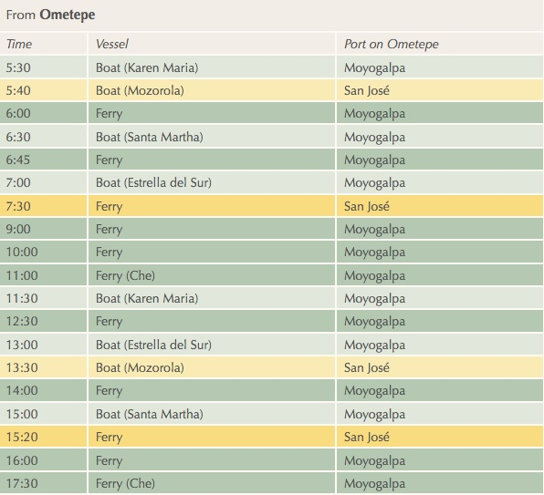

Getting Here
Ometepe Ferry Schedule
Passenger ferries and boats cross Lake Nicaragua every day between San Jorge (Rivas, on the mainland) and Ometepe Island. The crossing takes about one hour. Most departures serve Moyogalpa; a few serve San José del Sur, further down the lakeshore toward Los Ramos. From Moyogalpa port, Los Ramos is 16 km south — we can help arrange transport.
Schedule as posted at the port (photographed March 2026). Times can change with the season or weather — we recommend confirming locally or emailing us at losramoscommunity@gmail.com before your trip.
San Jorge → Ometepe
| Time | Vessel | Arrives at |
|---|---|---|
| 7:00 | Ferry (Che) | Moyogalpa |
| 7:45 | Ferry | Moyogalpa |
| 8:30 | Ferry | Moyogalpa |
| 9:00 | Boat (Karen María) | Moyogalpa |
| 9:30 | Ferry | San José del Sur |
| 10:00 | Boat (Mozorola) | San José del Sur |
| 10:30 | Ferry | Moyogalpa |
| 11:00 | Boat (Estrella del Sur) | Moyogalpa |
| 12:00 | Ferry | Moyogalpa |
| 12:30 | Boat (Santa Martha) | Moyogalpa |
| 13:30 | Boat (Karen María) | Moyogalpa |
| 14:30 | Ferry | Moyogalpa |
| 15:30 | Boat (Estrella del Sur) | Moyogalpa |
| 16:00 | Ferry (Che) | Moyogalpa |
| 16:30 | Ferry | Moyogalpa |
| 16:40 | Boat (Mozorola) | San José del Sur |
| 17:00 | Boat (Santa Martha) | Moyogalpa |
| 17:00 | Ferry | San José del Sur |
| 17:30 | Ferry | Moyogalpa |
Ometepe → San Jorge
| Time | Vessel | Departs from |
|---|---|---|
| 5:30 | Boat (Karen María) | Moyogalpa |
| 5:40 | Boat (Mozorola) | San José del Sur |
| 6:00 | Ferry | Moyogalpa |
| 6:30 | Boat (Santa Martha) | Moyogalpa |
| 6:45 | Ferry | Moyogalpa |
| 7:00 | Boat (Estrella del Sur) | Moyogalpa |
| 7:30 | Ferry | San José del Sur |
| 9:00 | Ferry | Moyogalpa |
| 10:00 | Ferry | Moyogalpa |
| 11:00 | Ferry (Che) | Moyogalpa |
| 11:30 | Boat (Karen María) | Moyogalpa |
| 12:30 | Ferry | Moyogalpa |
| 13:00 | Boat (Estrella del Sur) | Moyogalpa |
| 13:30 | Boat (Mozorola) | San José del Sur |
| 14:00 | Ferry | Moyogalpa |
| 15:00 | Boat (Santa Martha) | Moyogalpa |
| 15:20 | Ferry | San José del Sur |
| 16:00 | Ferry | Moyogalpa |
| 17:30 | Ferry (Che) | Moyogalpa |
Tips for the Crossing
- Times use the 24-hour clock (13:30 = 1:30 pm). Highlighted rows serve San José del Sur instead of Moyogalpa.
- Tickets are bought at the dock on the day of travel — foot passengers don't need a reservation.
- The larger ferries carry vehicles; the smaller boats are passenger-only and can feel choppy when the lake is rough.
- Coming to Los Ramos? Email us your arrival time and we'll help arrange transport from the port — and tell you which port works best for your visit.
Schedules as posted at the port

